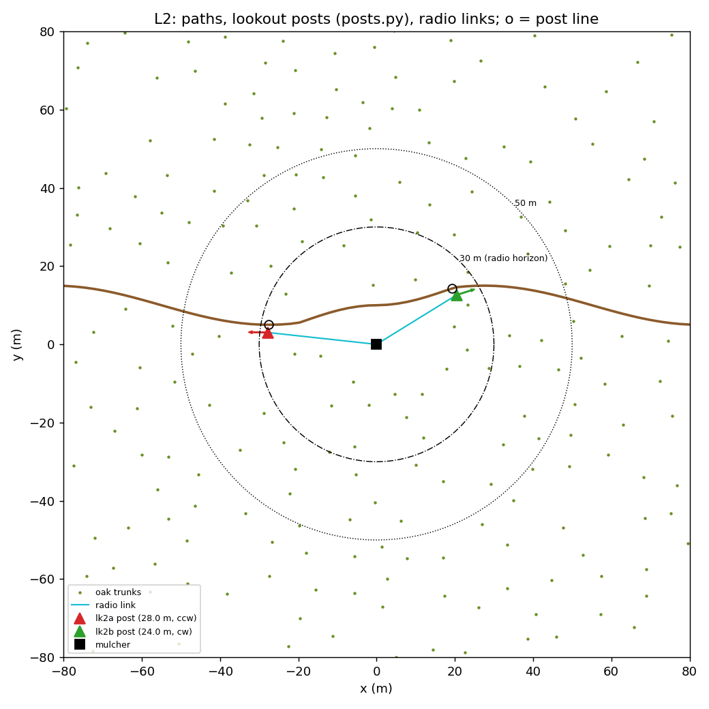
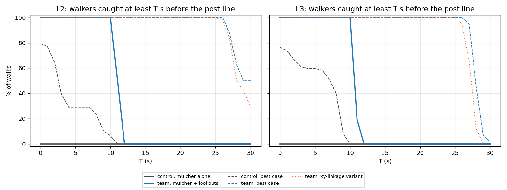
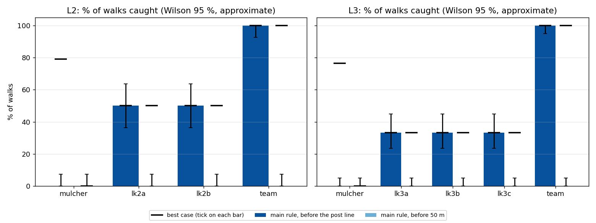

Mulcher Path Lookouts
Do robots parked on the paths into a mulching site warn the mulcher of a walker earlier than the mulcher's own lidar?
A forestry mulcher carries a lidar on its roof, but its cutting head blocks most of the view ahead, and a walker is only picked out at close range. The idea tested here is to park small robots (Huskies with the same lidar) as lookouts on the paths that lead into the site, and let them raise the alarm. Each simulated walk runs once, and every detector watches it at the same time. So the mulcher alone and the mulcher with its lookouts are compared on exactly the same walks.
The experiment
The site
The site is an oak forest, 160 m in radius, at flatforest v2 density, on flat ground. The mulcher is in the middle. Paths 3 m wide are cleared through the trees. The mulcher's body and cutting head are static boxes to the real machine's dimensions, with a VLP-16 lidar on the roof at 2.1 m. The head blocks 15 of the lidar's 16 channels over ±30° ahead.
There are two layouts. L2 has one path through the site, so two entries, with a lookout on each. L3 has three paths and three lookouts.


Where the lookouts stand
Each lookout's post is calculated from the map (posts.py). The post must be beside its path and 12–28 m from the mulcher, with no trunk within 3.7 m. It must also keep a radio link to the mulcher, with 28 m as the limit under the comms model. Of those spots, the chosen one sees a walker furthest from the mulcher: within 12.5 m of the post, with no trunk in the way.
- Most posts come out at 28 m.
- lk2b sits at 24 m, because every free spot further out along its path has a trunk too close.
Every lookout has the same VLP-16 lidar (0.5–100 m, 2 cm noise, 1800 × 16 points, 10 Hz) and stays parked, still, on its post.
The walks
Each walk moves a person (a 1.74 m mid-stride mesh) along a path toward the mulcher, in 0.5 m steps at walking pace (1.3 m/s).
- Start and end: a walk starts 45 m (±5 m) before the post line and ends 10 m from the mulcher.
- Combinations: per layout, 12 mulcher headings (0–330°) × each entry × 2 repeats. That gives 48 walks for L2 and 72 for L3.
- Stepping: the world is paused. After each move it advances one lidar period, and every lidar's first scan taken after the move is used.
Detection and what counts
The detection rule is the brief's rule as written:
- Background: the median of 10 scans.
- New return: at least 0.3 m closer than the background.
- Clusters: new returns are linked at 0.5 m.
- Alarm: at least 5 points on at least 2 rings, persisting for 2 steps within 1 m.
An alarm is a hit if it lies within 1 m of the walker. The team's alarm is the earliest of the mulcher's and the lookouts'. A lookout's alarm counts at once, because every post is linked by radio.
- Post line
- Where the path crosses its lookout's distance from the mulcher (28 m, or 24 m for lk2b's path). The main question: is the walker caught before it?
- 50 m
- A second, further catch line.
- Warning
- The time from the first alarm to the walker crossing the post line. A negative warning means the alarm came after they crossed.
- Variants
- Declared before any walk, to show how much the rule itself matters:
xy5: the same rule, with the linkage done in the horizontal plane;- a best case: at least 5 returns in the person's box, taken from ground truth.
- Check walks
- 12 walks per layout, repeated without the lookouts: once with them moved 1 km away, and once in a sim where they were never spawned. These show whether having the lookouts in the world changes what the mulcher itself sees.
Results
The lookouts give a much earlier warning. With the rule as written, the mulcher alone first raised the alarm when the walker was about 14 m away, always after they had crossed the post line. With the lookouts, every walker was caught before the post line, about 40 m out. That is about 22 s earlier on the same walk, and never less than 20 s.
| Main rule | L2 · 2 lookouts · 48 walks | L3 · 3 lookouts · 72 walks |
|---|---|---|
| Caught before the post line, mulcher alone | 0 / 48 (0–7 %) | 0 / 72 (0–5 %) |
| Caught before the post line, mulcher + lookouts | 48 / 48 (93–100 %) | 72 / 72 (95–100 %) |
| Median warning, mulcher alone / team | −12.5 s / 11.0 s | −11.2 s / 10.8 s |
| Team's first alarm vs the mulcher's, same walk (median; least) | 23.1 s earlier; 20.0 s | 21.9 s earlier; 21.5 s |
| Walker's distance from the mulcher at the first alarm (median), mulcher / team | 13.9 m / 39.4 m | 13.7 m / 41.7 m |
| Walks the mulcher alone never caught (each walk ends 10 m out) | 4 | 18 |
| Caught before 50 m, anyone | 0 | 0 |
| McNemar exact, team vs mulcher alone, before the post line | p = 7.1 × 10⁻¹⁵ | p = 4.2 × 10⁻²² |
Intervals are Wilson 95 % and only approximate, because walks share mulcher headings and entries and so aren't independent.

What the numbers mean
- The mulcher's 0 % is partly built in. The main rule links returns in 3D at 0.5 m. The VLP-16's rings are 2° apart, so beyond about 14.3 m no cluster spans the two rings the rule needs. It can't fire past about 14 m from any lidar (open-ground calibration: 12.5 m for every mount), and every post line is further out than that. The same limit is why nobody is caught before 50 m: a lookout 28 m out sees a walker at about 42 m. The paired time gain is the fairer measure.
- With looser rules the mulcher does better, and the lookouts better still. Under
xy5or the best case, the mulcher alone catches 54–79 % before the post line, with a median warning of 1–8 s. The team catches all of them before 50 m too, with 27–29 s of warning. - The mulcher's blind side. Every walk the mulcher alone never caught came in within 45° of its front, where the cutting head blocks its lidar. In L3 it missed all 18 walks that came in within 39° of the front. The lookouts caught every one of them.
- Each lookout covers one entry. On every walk, the lookout on the walker's own path raised the first alarm (24 walks each). Without any one lookout, L3 catches only 67 % before the post line.
- The lookouts don't change what the mulcher sees. In the check walks, the mulcher's first alarm fell on the same 0.5 m step as in the matching walk in 23 of 24 walks per layout, and within one step in all 24.

Limits
- The lookouts watch the paths, and every walker used one. A walker coming through the trees away from a path wouldn't pass a lookout. That wasn't tested.
- The posts depend on the radio model. Posts are at most 28 m out because the comms model has a hard 30 m horizon and 70 dB of loss per trunk. These are stress settings, not measured radio: a real link might allow posts further out (more warning) or fail to reach these. Every post was linked in the model, and the radio model was not changed.
- The lookouts are parked on known posts. The posts are calculated from a perfect map (the world's trunk list). A real mission would explore first and drive out, which is out of scope. The lookouts are static models, because a parked Husky rocks on its wheels in this simulator (DART with bullet contact), and each rock looked like a person to the detector.
- The walker and forest are idealised. One mid-stride person mesh moves along the path at a steady pace. The forest is trunks only, with no branches, canopy or undergrowth, on flat ground. Lidar noise is Gaussian 2 cm, and lidar poses come from ground truth.
- Two layouts, one forest each. Read the intervals as rough.
Code and data
Everything is on branch lookout_experiment of kalhansb/hmr_explo, under lookout/:
- the scripts, the plan with its full status log and deviations (
PLAN.md), and the write-up (README.md); - the analysis output (
results/); - the logs the analysis reads (
data/).
Submodule changes on the same branch:
- explo_planner: a lookout exploit mode and a 25 m lidar crop for mapping;
- hmr_sim: the VLP-16 datasheet range and noise;
- simple_nav_3d: launch arguments for the lidar topic and the map size.
LOOKOUT_GPU=1 lookout/docker_run.sh lk_L2 42 /lookout/run_layout.sh L2 /runs/lookout/L2_full full
LOOKOUT_GPU=1 lookout/docker_run.sh lk_L3 43 /lookout/run_layout.sh L3 /runs/lookout/L3_full full
python3 /lookout/analyse.py --layout L2=/runs/lookout/L2_full --layout L3=/runs/lookout/L3_full \
--calib /runs/lookout/calib_gpu --out /runs/lookout/results